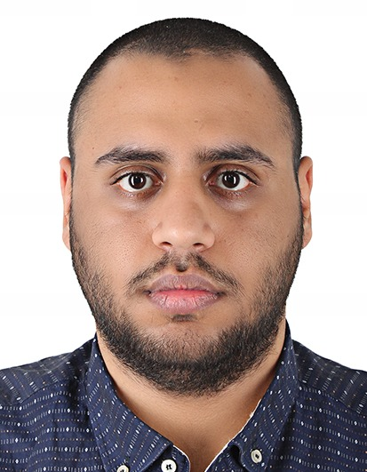
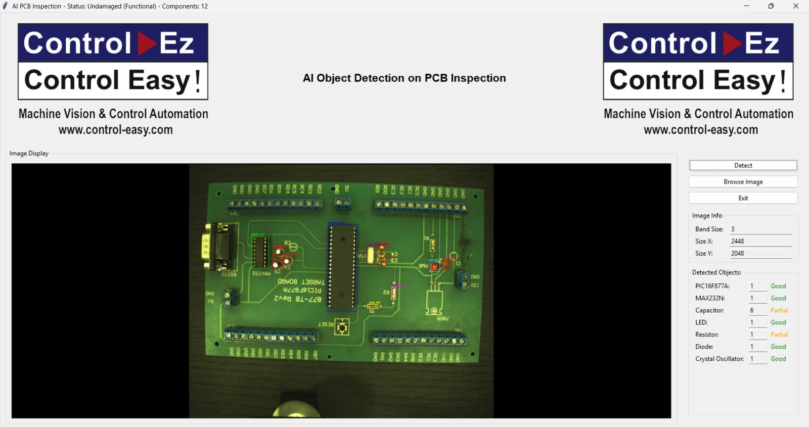
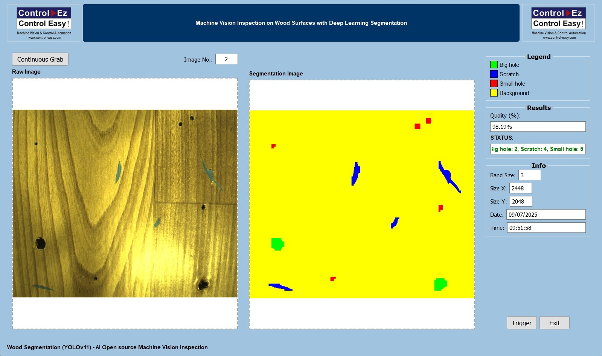
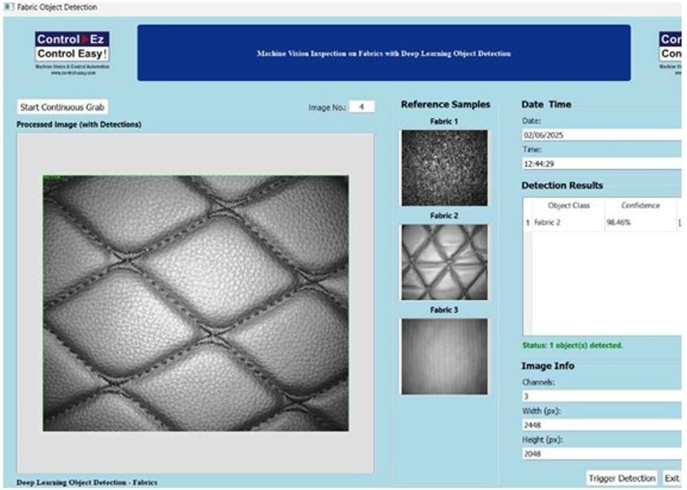
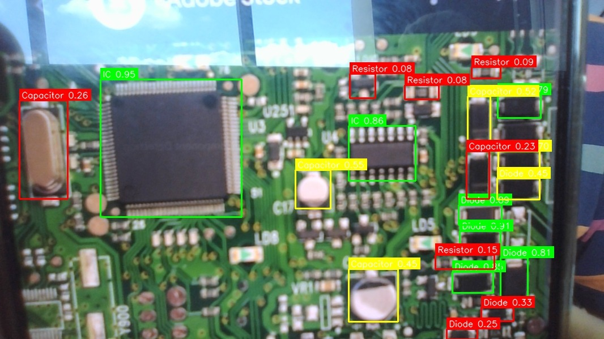

Computer Vision and AI
OpenCV, Roboflow, YOLOv8, Vision Transformer, PyTorch, ONNX Runtime GPU, segmentation, detection, classification, dataset annotation and augmentation.
Electrical and Electronic Engineering
I am a final-year Electrical and Electronic Engineering student at Asia Pacific University. My work connects circuit design, power analysis, PLC automation, computer vision, embedded AI, and real-time GUI tools into practical engineering systems.

Skill Areas
OpenCV, Roboflow, YOLOv8, Vision Transformer, PyTorch, ONNX Runtime GPU, segmentation, detection, classification, dataset annotation and augmentation.
Raspberry Pi 5, NVIDIA Jetson Orin Nano, ESP32, Arduino, sensors, ZED 2i, RGB-D sensing, LiDAR data integration, RFID access and GUI testing.
Power flow analysis, overcurrent relay coordination, IDMT relay settings, IEC and IEEE curves, TCC plotting, fault analysis and circuit breaker logic.
MATLAB, Simulink, App Designer, LabVIEW, PowerWorld, PyQt5, Streamlit, Python, C, C++, C#, SolidWorks, Dialux, LTspice and Tinkercad.
Selected Projects

Created a computer vision system using object detection and segmentation to locate present PCB components and logically deduce missing ones while reducing false positives.

Developed a GUI workflow for surface inspection where the image input, segmentation output and defect region can be reviewed clearly for quality-control checking.

Worked on a vision-based fabric inspection interface that presents detection results in a simple operator view, so the inspection result can be checked quickly.

Built a detection result workflow where the output image, confidence result and detected PCB regions are shown together, which makes the model result easier to evaluate.
Developed the vision subsystem using Jetson Orin Nano, ZED 2i stereo camera, YOLOv8, Roboflow, OpenCV, PyTorch and PyQt5 to detect obstacles and medicines in real time.
Built a MATLAB App Designer tool for IDMT relay coordination, operating time calculation, TCC curves, system analysis and validation reporting.
Built a 3-bus AC microgrid with transformer, CTs, circuit breakers and overcurrent relays to test IEC and IEEE inverse characteristics under different faults.
Developed a PLC and pneumatic control workflow for bus door automation using Siemens PLC exposure and automation logic.
Experience
March 2025 - July 2025
Developed machine vision systems for industrial quality control, including classification, object detection and segmentation. The work also included Raspberry Pi hardware integration, PLC workflow compatibility, technical manuals and GUI development.
SWOT Analysis
I have practical project experience in computer vision, AI, embedded systems, PLC automation, power systems, relay protection and GUI development. My internship also improved my testing, troubleshooting, documentation and explaining of technical work.
I still need to improve my problem analysis before selecting a final solution. I also need to compare methods in more detail and reflect more clearly on teamwork, ethics and professional responsibility.
My final-year projects, AI and machine vision work, PLC exposure, power protection learning, simulation tools and portfolio development can help me build a stronger engineering profile for graduate roles.
AI, automation, embedded systems and power technologies are changing very fast. Time management is also a pressure because university work, project work and personal portfolio development all need consistent effort.